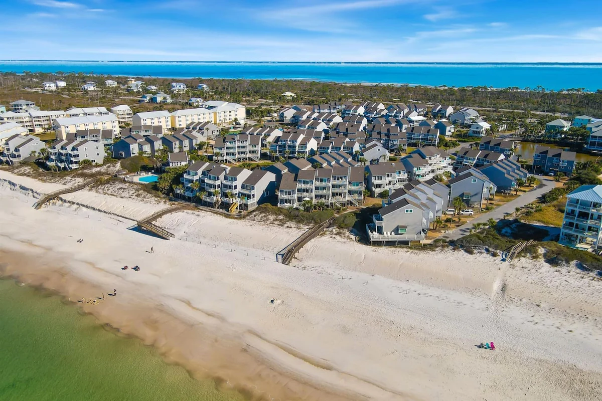

Local guide
Around the Cape.
Beach days, seafood stops, and a few places to pick up what you forgot.

Get outside
St. Joseph Peninsula State Park →
Walk the beach, explore the dunes, or take a kayak out on the bay.
Salinas Park →
Explore the Gulf-side beach access and the bayside boardwalk.
Cape San Blas Lighthouse →
Visit the historic lighthouse on the waterfront in Port St. Joe.
Eat & drink
Indian Pass Raw Bar →
Oysters and seafood on Indian Pass Road.
LongBill’s →
A casual spot on the Cape for lunch or dinner.
Pick up supplies
Cape Trading Post →
Groceries and beach supplies on Cape San Blas Road.
St. Joe Shrimp Company →
Pick up seafood to cook back at the house.